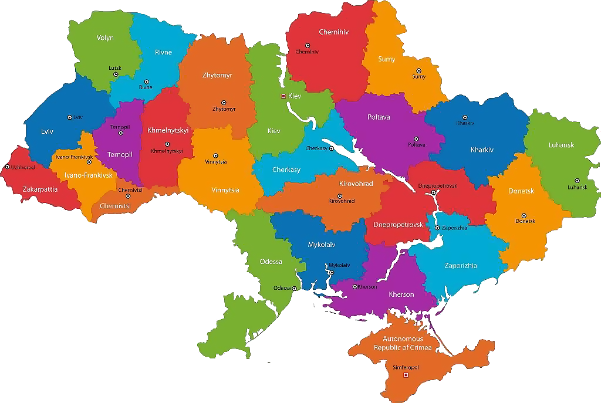

Сторінка з якорями
Вірш
Як легко судити когось, не себе,
Нам збоку усе зрозумілим здається,
Наскрізь чужу душу ми бачимо й серце,
Похвалимо сильне, уб'ємо слабе.
Якщо навіть нас не попросять про це,
Тверезу оцінку дамо без проблеми.
Коли на повістці чужі для нас теми,
Сльоза співчуття нам не зросить лице.
І наче граминочки ти не збрехав,
Були в тебе наміри дружні відверто...
Комусь, після слів тих, хотілося б вмерти...
Аби я судила когось, Боже, збав.
Фото
Пісня
Спочатку було Слово, і Слово було Бог
Потім було декілька славетних перемог
Що було жовто-блакитним, у червоне окропилось
Бога відмінили - Слово залишилось
Сначала било слово
І слово било (Лєнін)
Лєнін затискав народ
Як надійний ремінь
Тільки пояс або шию
Хай кожен обирає
Когось кладуть в вагони
Хтось у них сідає
Спочатку було слово
Потім був будинок
Майже ритуальний
За кількістю поминок
Майже ми не зникнули
Майже ми - живі
Але на суді історії
Крісла всі пусті